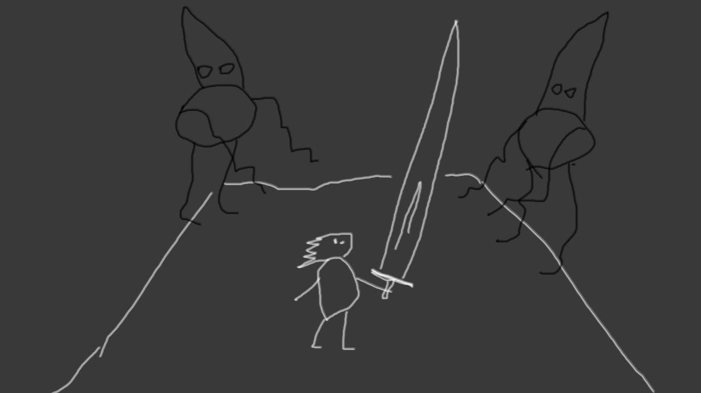

About
Entries
This page was archived from
libgdxjam.com
.

Blade of Light
cyberbach
Description
A small light man with big sword runs in a foggy world (like silent hill) and kills dark monsters.
Links
Sources
Google Play